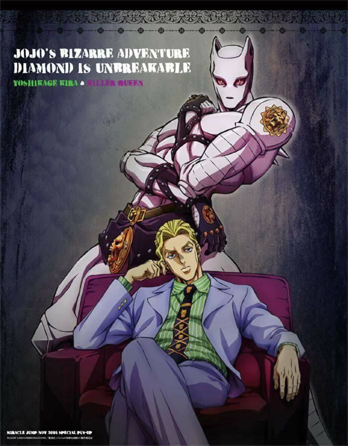

Mi presentación
Me llamo Yoshikage Kira. Tengo 33 años. Mi casa está al noroeste de Morioh, donde están las casas grandes y no estoy casado. Trabajo como empleado en el supermercado Kame Yu y llego a casa todos los días a más tardar a las 8:00 pm. No fumo y solo bebo en ocasiones. Duermo a las 11:00 pm y siempre procuro dormir ocho horas. Después de beber un vaso de leche tibia y hacer unos 20 minutos de calistenia antes de ir a la cama, suelo dormir hasta la mañana. Despierto sin fatiga ni estrés, como un bebé. En mi último chequeo, me dijeron que estoy sano.
